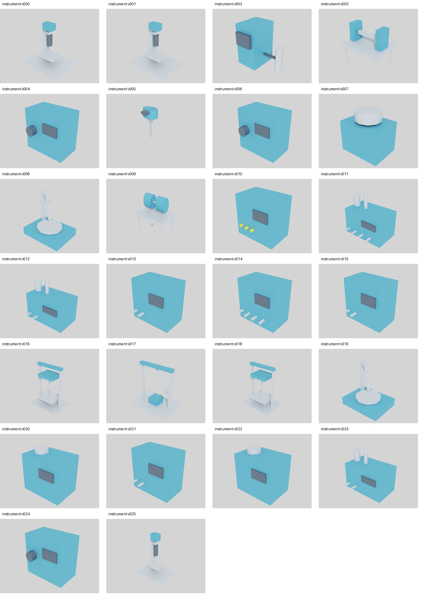

58종 자료를 기다리는 동안 연결된666종 검증은 독립적으로 진행합니다.
공통 베이스의 토폴로지 검사만 재사용합니다. 개별 스케일·장착 기준·포트·작업물·공정 검증은 자동 상속하지 않습니다. REAL_VERIFIED는 실제 장비 관찰 증거가 있어야 합니다.
바닥 기준 재검토6종: 트리밍·주탕 로봇·스프레이 로봇·취출 로봇·용해로·냉각장치.
상부 장착 재검토2종: 전동 체인 호이스트·오버헤드 트롤리 레일.
참조 외형과 실제 형상 경계 차이20종: 여유 공간 포함 여부를 먼저 확인합니다. 확정 오류나 실측 불일치로 단정하지 않습니다.
USD 시간 샘플 부재는 외부 스크립트 동작이 없다는 뜻이 아닙니다. 물리·동작·포트는 실행 증거가 필요합니다.
현재 베이스 SHA와 일치하는 기존 RTX 캡처를 재사용했습니다. 참조 외함·프로브는 보이지만 설비별 전용 메커니즘의 적합성을 입증하지 못해 승격0건입니다.

실제 설치 식별 경로4종 / 구매 예정 사양0종 / 승인 기준 설계11종 / 제조사 원본43종.
구조 파싱 PASS, 승인된 형상, 물리 시뮬레이션, 실장비 검증은 서로 다른 단계입니다.
트랙별 목록·검색·개별10항목·증거 게이트를 한 페이지로 연결했습니다.
출처 없는PASS·오래된SHA·의존파일 변경·시뮬레이션 REAL 위조를 거절합니다.
트랙B: 바닥 기준6종과 참조 외형 차이20종의 설계 의도를 확인해 수정 검증 대상으로 정리합니다.
트랙A: 최소 식별 자료 수신 → 동일성 확인 → 연결 검증 진입. 회신 전 BLOCKED 유지, 트랙B는 계속 진행합니다.
내부 조사 종료 / 666종 연결 보존 / 58종 BLOCKED / 외부 요청 미발송 / 원본·장비 쓰기0.